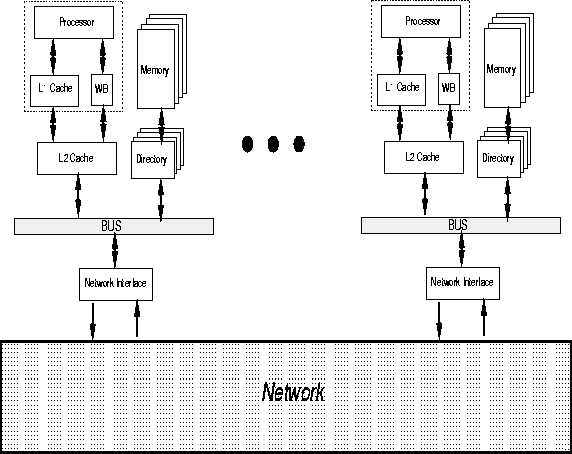

Figure 3.2 shows the memory and network system organization in RSIM. RSIM simulates a hardware cache-coherent distributed shared memory system (a CC-NUMA), with variations of a full-mapped invalidation-based directory coherence protocol. Each processing node consists of a processor, a two level cache hierarchy (with a coalescing write buffer if the first-level cache is write-through), a portion of the system's distributed physical memory and its associated directory, and a network interface. A pipelined split-transaction bus connects the secondary cache, the memory and directory modules, and the network interface. Local communication within the node takes place on the bus. The network interface connects the node to a multiprocessor interconnection network for remote communication.

Figure 3.2: The RSIM memory system
Both cache levels are lockup-free and store the state of outstanding requests using miss status holding registers (MSHRs)[10].
The first-level cache can either be a write-through cache with a no-allocate policy on writes, or a write-back cache with a write-allocate policy. RSIM allows for a multiported and pipelined first level cache. Lines are replaced only on incoming replies. The size, line size, set associativity, cache latency, number of ports, and number of MSHRs can be varied.
The coalescing write buffer is implemented as a buffer with cache-line-sized entries. All writes are buffered here and sent to the second level cache as soon as the second level cache is free to accept a new request. The number of entries in the write buffer is configurable.
The second-level cache is a write back cache with write-allocate. RSIM allows for a pipelined secondary cache. Lines are replaced only on incoming replies; more details of the protocol implementation are given in Chapter 13. The secondary cache maintains inclusion with respect to the first-level cache. The size, line size, set associativity, cache latency, and number of MSHRs can be varied.
The memory is interleaved, with multiple modules available on each node. The memory is accessed in parallel with an interleaved directory, which implements a full-mapped cache coherence protocol. The memory access time, the memory interleaving factor, the minimum directory access time, and the time to create coherence packets at the directory are all configurable parameters.
The directory can support either a MESI protocol with Modified, Exclusive, Shared, and Invalid states, or a three-state MSI protocol. The RSIM directory protocol and cache controllers support cache to cache transfers (shown in Figure 3.3 as ``$ to $''). Figure 3.3 gives simplified state diagrams for both protocols, showing the key states and transitions at the caches due to processor requests and external coherence actions. Internally, the protocols also include transient states at the directory and caches; these conditions are handled according to mechanisms specified in Chapters 13 and 14.
For local communication within a node, RSIM models a pipelined split-transaction bus connecting the L2 cache, the local memory, and the local network interface. The bus speed, bus width, and bus arbitration delay are all configurable.
For remote communication, RSIM currently supports a two-dimensional mesh network .
RSIM models a pipelined wormhole-routed network with contention at the
various switches. For deadlock avoidance, the system includes separate
request and reply networks. The flit delay per network hop, the width of the
network, the buffer size at each switch, and the length of each
packet's control header are user-configurable parameters.
.
RSIM models a pipelined wormhole-routed network with contention at the
various switches. For deadlock avoidance, the system includes separate
request and reply networks. The flit delay per network hop, the width of the
network, the buffer size at each switch, and the length of each
packet's control header are user-configurable parameters.

Figure 3.3: Coherence protocols in RSIM